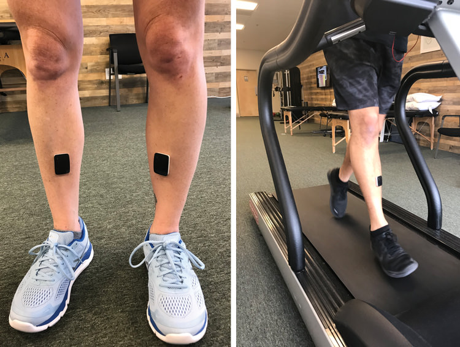

← Explore all Running & Sports Performance services
Why Running Injuries Are So Common
Running is one of the most popular forms of exercise in Bend, Oregon, and for good reason. With hundreds of miles of trails winding through the Deschutes National Forest, along the Deschutes River, and up into the Cascade Range, Central Oregon offers some of the finest running terrain in the Pacific Northwest. Thousands of runners train here year-round for events ranging from local 5K races to ultramarathons on the Cascade Crest.
However, running places significant repetitive stress on the musculoskeletal system. Studies estimate that approximately 65 percent of runners sustain at least one injury per year, with the majority of those injuries classified as overuse conditions. The repetitive impact of foot strike, combined with mileage increases, training errors, biomechanical inefficiencies, and inadequate recovery, creates a pattern of tissue overload that eventually leads to pain and dysfunction.
At Resolve Physical Therapy, we specialize in treating running injuries using a combination of hands-on manual therapy, biomechanical analysis with DorsaVi wearable sensors, progressive exercise programming, and individualized return-to-running plans. Every session is one-on-one with a Doctor of Physical Therapy, ensuring that you receive focused, expert care from evaluation through discharge.
Common Running Injuries We Treat
Plantar Fasciitis
Plantar fasciitis is the most common cause of heel pain in runners. The plantar fascia is a thick band of connective tissue that spans the bottom of your foot from the heel bone to the base of the toes. When this tissue is subjected to excessive tensile loading through running, it can develop microtears and degenerative changes that produce sharp, stabbing pain at the heel, especially with your first steps in the morning or after prolonged sitting.
At Resolve PT, treatment for plantar fasciitis includes manual therapy to the calf complex and foot intrinsic muscles, progressive loading exercises for the plantar fascia and Achilles tendon, gait retraining to reduce impact loading, and footwear assessment. For persistent cases, we may recommend focused shockwave therapy, which has strong clinical evidence for accelerating tendon healing in chronic plantar fasciitis.
IT Band Friction Syndrome
Iliotibial band friction syndrome presents as lateral knee pain that typically begins during a run and progressively worsens with continued activity. The IT band is a thick strip of fascia that runs from the hip down the outside of the thigh and attaches below the knee. When running biomechanics create excessive friction between the IT band and the lateral femoral condyle, irritation and inflammation develop at the knee.
Our treatment approach for IT band syndrome focuses on identifying the underlying biomechanical contributors, which often include weakness in the hip abductors and external rotators, poor single-leg stability, excessive crossover gait pattern, and overstriding. We use DorsaVi sensors to quantify these movement patterns and design targeted strengthening and retraining programs that address the root cause rather than simply treating the symptoms.
Shin Splints (Medial Tibial Stress Syndrome)
Shin splints cause diffuse pain along the inner border of the tibia, typically in the lower two-thirds of the shin. This condition represents a stress reaction of the bone and periosteum in response to repetitive loading that exceeds the tissue's ability to remodel and adapt. Shin splints are especially common in runners who have recently increased their training volume or transitioned to harder running surfaces.
Physical therapy treatment includes load management strategies, progressive calf and tibialis posterior strengthening, impact modification through gait retraining, and a graduated return-to-running program that allows the bone to adapt safely. It is important to differentiate shin splints from tibial stress fractures, which require more aggressive rest and activity modification. If we suspect a stress fracture during your evaluation, we will coordinate imaging and physician referral promptly.
Calf Strains
Calf muscle strains involve partial tearing of the gastrocnemius or soleus muscles, typically occurring during pushing off, hill running, or speed work. The injury can range from a mild Grade I strain with minimal fiber disruption to a more significant Grade II tear with palpable defect and significant pain. Calf strains are particularly common in masters-level runners over the age of 40 due to age-related changes in tendon and muscle stiffness.
Treatment at Resolve PT follows an evidence-based progression that begins with early protected loading and soft tissue mobilization, advances through progressive isometric and eccentric strengthening, and culminates in sport-specific plyometric training and graduated return to running. Recovery time depends on strain severity, with most runners returning to full training within four to eight weeks.
Patellofemoral Pain Syndrome (Runner's Knee)
Patellofemoral pain, commonly called runner's knee, is characterized by pain around or behind the kneecap that worsens with running, squatting, climbing stairs, or prolonged sitting. The condition results from abnormal tracking of the patella within the femoral groove, which increases stress on the cartilage and subchondral bone behind the kneecap.
Contributing factors include quadriceps weakness (particularly the vastus medialis oblique), hip abductor weakness, overpronation, and training errors. Our treatment approach combines targeted strengthening of the quadriceps and hip stabilizers, manual therapy for patellar mobility, taping techniques for immediate symptom relief, and running form modifications to reduce patellofemoral joint loading.
Hip Bursitis (Greater Trochanteric Pain Syndrome)
Greater trochanteric pain syndrome, previously referred to as hip bursitis, causes pain on the outside of the hip that often worsens with running, side-lying, and climbing stairs. Current research suggests that the primary pathology is typically gluteal tendinopathy rather than isolated bursitis, which changes the treatment approach significantly. The gluteus medius and minimus tendons attach at the greater trochanter and are subjected to compressive and tensile loads during the stance phase of running.
Effective treatment requires progressive loading of the gluteal tendons through a carefully structured exercise program, avoidance of positions that compress the tendon against the trochanter, manual therapy, and gait retraining. Hip strengthening exercises must be prescribed carefully, as many common hip exercises can actually worsen compressive loading on the affected tendons.
Hamstring Strains
Hamstring strains in runners typically involve the biceps femoris at its proximal attachment near the ischial tuberosity. Risk factors include previous hamstring injury, age over 30, inadequate warm-up, rapid acceleration, and muscle imbalances between the quadriceps and hamstrings. High-speed running places the hamstring muscles under significant eccentric load during the late swing phase, making them vulnerable to strain when fatigued or insufficiently conditioned.
Our rehabilitation protocol progresses through early protected loading, progressive lengthening exercises, eccentric strengthening (Nordic hamstring exercises), sport-specific movement retraining, and graduated return to running with objective strength testing to ensure readiness. We use functional hop tests and dynamometry measurements to verify that both limbs are performing symmetrically before clearing you for full training.
Tibialis Posterior Tendonitis
The tibialis posterior muscle plays a critical role in supporting the medial longitudinal arch of the foot and controlling pronation during the stance phase of running. When this tendon becomes overloaded, it develops pain and tenderness along the inside of the ankle, often accompanied by progressive arch flattening and increased foot pronation. Runners with pre-existing flat feet or excessive pronation are at higher risk for this condition.
Treatment includes progressive strengthening of the tibialis posterior and foot intrinsic muscles, arch support through orthotic intervention when appropriate, manual therapy for ankle and foot mobility, and training modification to reduce volume while the tendon heals. We often incorporate single-leg balance and proprioception exercises to improve dynamic foot and ankle control during running.
Our Running Injury Evaluation Process
When you arrive at Resolve Physical Therapy for a running injury evaluation, your therapist will conduct a thorough assessment that goes far beyond examining the painful area. Running injuries are almost always the result of a combination of factors, and identifying each contributor is essential for effective treatment and long-term prevention.
Your evaluation will include:
- Detailed medical and training history — including current mileage, training surfaces, recent changes in volume or intensity, injury history, and footwear
- Strength and endurance testing — focused assessment of the hip, knee, ankle, and foot musculature to identify weakness or asymmetry
- Flexibility and mobility assessment — evaluation of joint range of motion and muscle length throughout the lower extremity and trunk
- Running mechanics analysis — observation and video review of your running form to identify movement patterns that contribute to tissue overload
- DorsaVi gait analysis — wearable sensor technology that provides objective biomechanical data including joint angles, cadence, ground contact time, and symmetry indices
- Footwear assessment — review of your current running shoes for wear patterns, support characteristics, and appropriateness for your foot type and running style
Based on this comprehensive evaluation, your therapist will develop an individualized treatment plan with clear short-term and long-term goals, a graduated return-to-running timeline, and home exercise programming to complement your in-clinic sessions.
Running Injury Prevention Strategies
The best running injury is the one you never get. While not all injuries are preventable, research has identified several modifiable risk factors that significantly reduce your likelihood of developing an overuse injury. At Resolve PT, we incorporate prevention education into every running injury treatment plan so that you not only recover from your current injury but also reduce your risk of future problems.
Gradual Mileage Increases
The most well-established risk factor for running injury is training error, particularly rapid increases in weekly mileage. The widely cited "10 percent rule" provides a general guideline, but individual tolerance varies significantly. Your physical therapist can help you develop a periodized training plan that incorporates progressive overload with appropriate recovery weeks based on your specific injury history and fitness level.
Cross-Training
Supplementing your running with low-impact cardiovascular activities such as cycling, swimming, or elliptical training reduces the cumulative impact loading on your musculoskeletal system while maintaining aerobic fitness. Cross-training is especially valuable during injury recovery, when it allows you to maintain conditioning while reducing stress on the healing tissue.
Proper Footwear
Running shoes should be selected based on your foot type, running biomechanics, and the surfaces you train on. Most running shoes lose their shock-absorbing properties after 300 to 500 miles. At Resolve PT, we can assess your current footwear and provide recommendations based on your gait analysis findings. We work closely with local running specialty stores in Bend to ensure you find the right fit.
Strength Training and Flexibility
A consistent strength training program targeting the hip stabilizers, quadriceps, hamstrings, calves, and foot intrinsic muscles provides the muscular foundation needed to absorb the forces of running without tissue breakdown. Dynamic warm-up before running and targeted stretching after running help maintain the flexibility needed for efficient running mechanics. Your therapist at Resolve PT will design a strength and flexibility program specific to your needs and the demands of your training.

DorsaVi biomechanical sensors provide objective running gait data at Resolve Physical Therapy in Bend, Oregon.
Related Services
Running injuries are just one aspect of our sports rehabilitation program. If your injury occurred during a sport other than running, or if you are dealing with a sports-related condition not listed above, visit our sports injuries page for additional information on conditions we treat at Resolve Physical Therapy.
Frequently Asked Questions
Should I stop running completely if I have an injury?
Not necessarily. Many running injuries respond well to modified training rather than complete rest. Your physical therapist at Resolve PT will evaluate your injury and create a plan that may include reduced mileage, adjusted pace, or cross-training to maintain fitness while the injured tissue heals. Complete rest is sometimes necessary for stress fractures or acute muscle tears, but most overuse injuries benefit from a graduated return-to-running program.
How long does it take to recover from a running injury?
Recovery timelines vary depending on the injury and its severity. Mild muscle strains may resolve in two to four weeks, while conditions like plantar fasciitis or IT band syndrome can take six to twelve weeks of consistent treatment. Stress fractures typically require six to eight weeks of modified activity. At Resolve PT, we use objective testing and functional benchmarks to guide your return to running safely.
What is a DorsaVi gait analysis and how does it help with running injuries?
DorsaVi uses wearable sensors placed on your body while you run to capture precise biomechanical data including joint angles, ground reaction forces, and movement patterns. Unlike video analysis alone, DorsaVi provides objective numerical data that helps identify subtle asymmetries or movement faults contributing to your injury. Jenny McAteer, DPT at Resolve PT, uses this technology to design targeted treatment plans that address the root cause of your injury.
Do I need a referral to see a physical therapist for a running injury in Oregon?
No. Oregon is a direct-access state, which means you can schedule an evaluation with a physical therapist without a physician referral. At Resolve Physical Therapy in Bend, you can call (541) 306-1099 or email resolveptbend@gmail.com to schedule your first appointment. Most insurance plans, including Medicare and Medicaid/OHP, are accepted.
Start Your Recovery Today
Running injuries do not resolve on their own with rest alone. The sooner you address the underlying cause, the faster you can return to pain-free running. Schedule an evaluation at Resolve Physical Therapy in Bend, Oregon, and let our team help you get back on the trail.